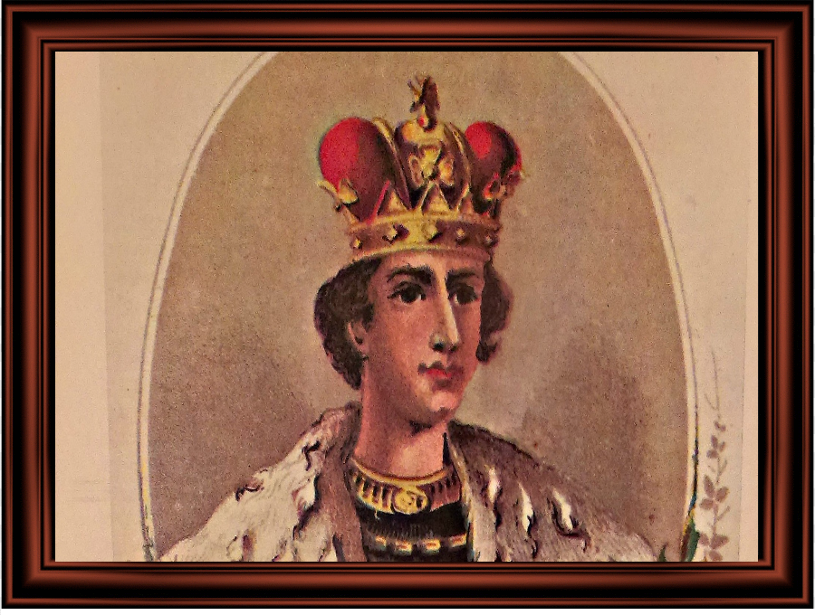
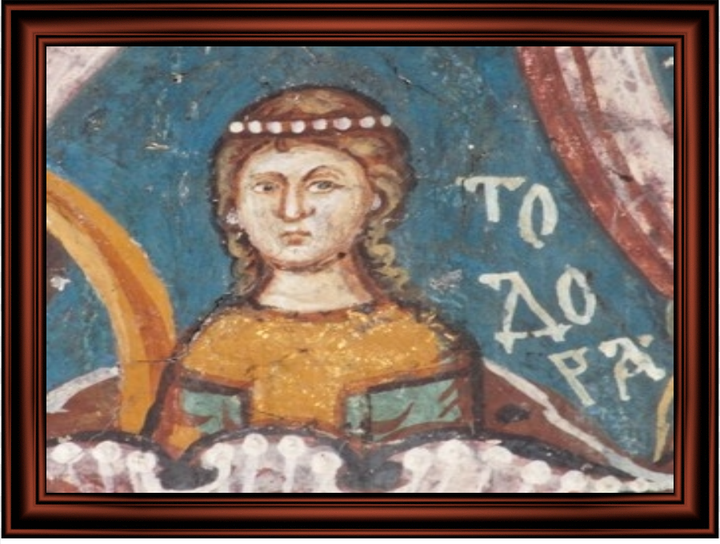

Потомци

Стефан Урош V Немањић (Син)
Наследник царства
Није имао дјеце
Заслужан за распад царства

Непознато име (Кћерка)
Образовање: (навести)
Породица: (навести)
Гдје живи и чиме се бави:(навести)
Назад
Сва права задржава аутор